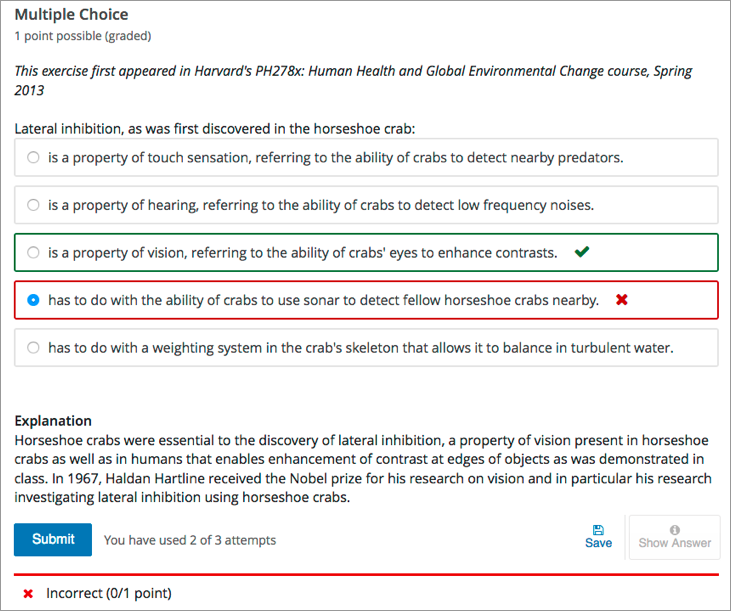
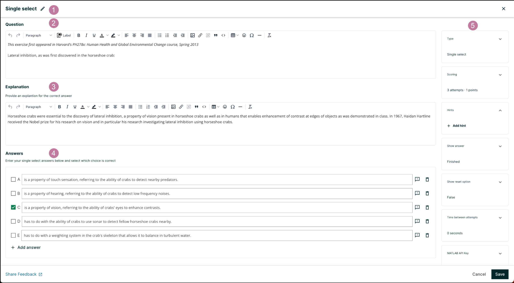
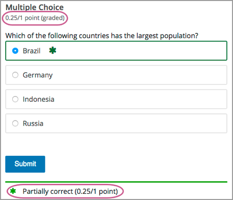
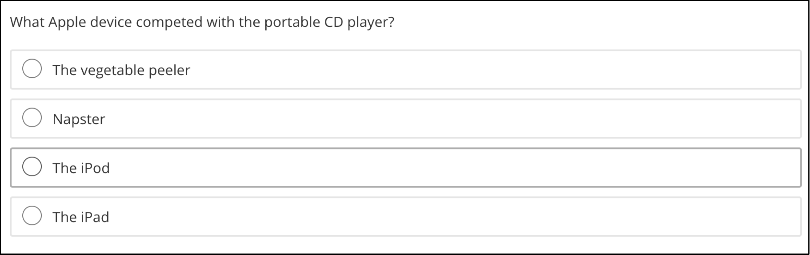
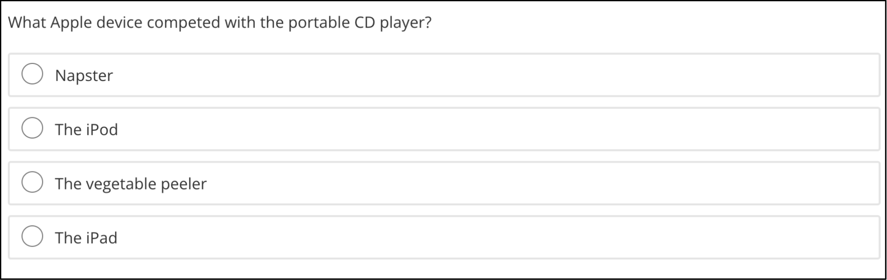

10.39. Single Select Problem#
Note
EdX offers full support for this problem type.
The single select problem type is a simple problem type that can be added to any course. At a minimum, single select problems include a question or prompt and several answer options. By adding hints, feedback, or both, you can give learners guidance and help when they work on a problem.
For more information about the simple problem types, see Working with Problem Components.
10.39.1. Overview#
In single select problems, learners select one option from a list of answer options. Unlike dropdown problems, where the answer choices do not appear until the learner selects the dropdown arrow, answer choices for single select problems are immediately visible directly below the question.
Single select problems can also have several advanced options, such as reordering, or shuffling, the set of answer choices for each learner. For more information about these options, see Editing Single Select Problems using the Advanced Editor.
10.39.1.1. Example Single Select Problem#
In the LMS, learners select a single answer option to complete a single select problem. An example of a completed single select problem follows.
{kind=link}
10.39.1.2. Pedagogical Considerations for Single Select Questions#
EdX recommends the use, whenever possible, of authentic assessment rather than single select questions for graded problems. The use of authentic assessment in online courses tends to lead to better learning outcomes. In addition, authentic assessment allows for infinite attempts, mastery learning, and more intellectual risk taking, which lead to substantially better learning outcomes.
Single select questions do have these uses.
Ungraded single select questions can help students think about a concept in the context of knowledge transfer.
For many subject areas, authentic assessments are either unavailable or prohibitively complex to use. In such courses, single select questions can act as the only available fall back.
Fortunately, single select questions are among the best studied in assessment literature. A few guidelines for the creation of such questions follow.
Organize the set of answers logically. Use consistent phrasing for the answers, and when possible, parallel structure.
Place as many of the words in the stem as possible, and keep the answers as concise as possible.
The distractors should not be substantially shorter, longer, or use different structure than the correct answer. The answer options should be as consistent in structure, length, and phrasing as possible.
Avoid using negatives (and especially double negatives) in the question and the answers.
Test higher order thinking (comprehension and critical thinking). Avoid simple recall.
If you specify a finite number of attempts, avoid trick questions and try to keep wording clear and unambiguous.
Make all distractors plausible.
Use “All of the above” and “None of the above” answer options with caution. If a learner can identify at least two correct answers, it can give away the answer with only partial comprehension.
10.39.2. Adding a Single Select Problem#
You add single select problems in Studio by selecting the Problem component. In the problem editor, select the Single select option. Fill in the fields on this screen to create your problem.
{kind=link}
Creating a single select problem is as simple as:
Editing the Display Name. Click the pen symbol to edit.
Filling in the Question field.
Filling in the Explanation field. When this is shown to learners is based on the selection in the Show answer panel on the right.
Filling in the Answer fields. Select the correct answer(s) by ticking off the checkbox(es). Additional answers can be added by clicking the Add answer button. Answers can be deleted by clicking the trash can icon. Feedback can be provided for each answer. More information on feedback can be found in the following section.
Selecting and filling in any desired settings on the right.
If you have any questions on the specifics of using the simple editor, please check out The Simple Editor and Defining Settings for Problem Components.
Note
Note
With the single select problem type, although the learner only selects one answer, you can set more than one correct answer. You can do this by ticking more than one of the checkboxes in the Answers section.
10.39.2.1. Adding Feedback#
For an overview of feedback in problems, see Adding Feedback and Hints to a Problem. You can add feedback for each of the answer options you provide in the problem. Use the following guidelines when providing feedback.
Add feedback to incorrect answers to target common misconceptions and mistakes.
Ensure feedback provides some guidance to the learner about how to arrive at the correct answer.
Add feedback for the correct answer to reinforce why the answer is correct. Because learners are able to guess, ensure that feedback provides a reason why the answer is correct for learners who might have selected that answer by chance.
You can add answer-specific feedback for each answer in a single select problem. You can access the feedback panel shown below by clicking the button to the right of the answer text.

Simply enter your feedback message in this text field. It will display when the learner submits this answer.
10.39.2.2. Adding Hints#
You can add hints to a single select problem . For an overview of hints in problems, see Adding Feedback and Hints to a Problem.
In the settings panels on the right of the editor, you’ll find a Hints panel.

Click the Add hint button to add a new hint text field. To delete any hints you’ve added, click the trash can icon next to its respective hint field.
Note
You can configure any number of hints. The learner views one hint at a time and views the next one by selecting Hint again.
10.39.3. Editing Single Select Problems using the Advanced Editor#
If the simple editor is not enough to meet your needs, you can switch over to the advanced editor. In the setting panels on the right of the editor, click Show advanced settings, then scroll down and click Switch to advanced editor.
You can use the advanced editor to identify the elements of a single select problem with OLX. For more information, see Single Select Problem OLX Reference. To format equations, you can use MathJax. For more information, see MathJax for Mathematics.
You can see the OLX for the example problem from the Overview section below.
<problem>
<multiplechoiceresponse>
<label>Lateral inhibition, as was first discovered in the horseshoe crab:</label>
<choicegroup type="MultipleChoice">
<choice correct="false">is a property of touch sensation, referring to
the ability of crabs to detect nearby predators.</choice>
<choice correct="false">is a property of hearing, referring to the
ability of crabs to detect low frequency noises.</choice>
<choice correct="false">is a property of vision, referring to the
ability of crabs' eyes to enhance contrasts.</choice>
<choice correct="true">has to do with the ability of crabs to use
sonar to detect fellow horseshoe crabs nearby.</choice>
<choice correct="false">has to do with a weighting system in the
crab's skeleton that allows it to balance in turbulent water.</choice>
</choicegroup>
<solution>
<div class="detailed-solution">
<p>Explanation</p>
<p>Horseshoe crabs were essential to the discovery of lateral
inhibition, a property of vision present in horseshoe crabs as well
as humans that enables enhancement of contrast at edges of objects
as was demonstrated in class. In 1967, Haldan Hartline received the
Nobel prize for his research on vision and in particular his
research investigating lateral inhibition using horseshoe crabs.</p>
</div>
</solution>
</multiplechoiceresponse>
</problem>
Note
You can begin work on the problem in the simple editor, and then switch to the advanced editor. However, after you save any advanced OLX changes you make in the advanced editor, you may not be able to cannot switch back to the simple editor.
10.39.3.1. Adding Feedback#
In the advanced editor, you configure feedback with the following syntax.
<choice correct="false">Choice Label
<choicehint>Feedback for when learner selects this answer.</choicehint>
</choice>
For example, the following problem has feedback for each answer.
<problem>
<multiplechoiceresponse>
<label>Which of the following is an example of a vegetable?</label>
<description>You can select only one option.</description>
<choicegroup type="MultipleChoice">
<choice correct="false">apple
<choicehint>An apple is the fertilized ovary that comes from an apple
tree and contains seeds classifying it as a fruit.</choicehint>
</choice>
<choice correct="false">pumpkin
<choicehint>A pumpkin is the fertilized ovary of a squash plant
and contains seeds classifying it as a fruit.</choicehint>
</choice>
<choice correct="true">potato
<choicehint>A potato is an edible part of a plant in tuber form and
is classified as a vegetable.</choicehint>
</choice>
<choice correct="false">tomato
<choicehint>Many people mistakenly think a tomato is a vegetable.
However, because a tomato is the fertilized ovary of a tomato plant
and contains seeds it is classified as a fruit.</choicehint>
</choice>
</choicegroup>
</multiplechoiceresponse>
</problem>
10.39.3.1.1. Customizing Feedback Labels#
By default, the feedback labels shown to learners are Correct and Incorrect. If you do not define feedback labels, learners see these terms when they submit an answer, as in the following example.
Incorrect: A pumpkin is the fertilized ovary of a squash plant and contains
seeds classifying it as a fruit.
You can configure the problem to override the default labels. For example, you can configure a custom label for a specific wrong answer.
Not Quite: Many people mistakenly think a tomato is a vegetable. However,
because a tomato is the fertilized ovary of a tomato plant and contains seeds
it is classified as a fruit.
In the advanced editor, you configure custom feedback labels with the following syntax.
<choice correct="true or false">Answer
<choicehint label="Custom Label">Feedback for learners who select this
answer.</choicehint>
</choice>
For example, the feedback for the following answer option is configured to use a custom label.
<choice correct="false">tomato
<choicehint label="Not Quite">Many people mistakenly think a tomato is a
vegetable. However, because a tomato is the fertilized ovary of a tomato
plant and contains seeds, it is a fruit.</choicehint>
</choice>
Note
The default labels Correct and Incorrect display in the learner’s requested language. If you provide custom labels, they display as you define them to all learners. They are not translated into different languages.
10.39.3.1.2. Targeted Feedback#
You can configure a single select problem so that explanations for specific answers are automatically shown to learners. You can use these explanations to guide learners towards the right answer. Therefore, targeted feedback is most useful for single select problems for which learners are allowed multiple attempts.
You configure the problem to provide targeted feedback by editing the OLX in the advanced editor.
Add a
targeted-feedbackattribute to the<multiplechoiceresponse>element, with no value:<multiplechoiceresponse targeted-feedback="">.Add an
explanation-idattribute with a unique value to each of the<choice>elements:<choice correct="false" explanation-id="feedback1">.You can use the
<solution>element for the correct answer.Add a
<targetedfeedbackset>element after the<multiplechoiceresponse>element.Within
<targetedfeedbackset>, add one or more<targetedfeedback>elements.Within each
<targetedfeedback>element, add one of the unique identifyingexplanation-idattributes to map that feedback to a specific answer choice.Within each
<targetedfeedback>element use HTML formatting, such as<p></p>tags, to enter your explanation for the specified answer option.
For example, the OLX for a single select problem follows, showing a unique ID for each answer choice. This is immediately followed by OLX that defines the targeted feedback.
<problem>
<multiplechoiceresponse targeted-feedback="">
<label>What Apple device competed with the portable CD player?</label>
<choicegroup type="MultipleChoice">
<choice correct="false" explanation-id="feedback1">The iPad</choice>
<choice correct="false" explanation-id="feedback2">Napster</choice>
<choice correct="true" explanation-id="correct">The iPod</choice>
<choice correct="false" explanation-id="feedback3">The vegetable peeler</choice>
</choicegroup>
<solution explanation-id="correct">
<div class="detailed-solution">
<p>The iPod directly competed with portable CD players.</p>
</div>
</solution>
</multiplechoiceresponse>
<targetedfeedbackset>
<targetedfeedback explanation-id="feedback1">
<div class="detailed-targeted-feedback">
<p>Targeted Feedback</p>
<p>The iPad came out later and did not directly compete with
portable CD players.</p>
</div>
</targetedfeedback>
<targetedfeedback explanation-id="feedback2">
<div class="detailed-targeted-feedback">
<p>Targeted Feedback</p>
<p>Napster was not an Apple product.</p>
</div>
</targetedfeedback>
<targetedfeedback explanation-id="feedback3">
<div class="detailed-targeted-feedback">
<p>Targeted Feedback</p>
<p>Vegetable peelers do not play music.</p>
</div>
</targetedfeedback>
</targetedfeedbackset>
</problem>
10.39.3.2. Adding Hints#
In the advanced editor, you add the <demandhint> element immediately before
the closing </problem> tag, and then configure each hint using the
<hint> element.
<problem>
.
.
.
<demandhint>
<hint>Hint 1</hint>
<hint>Hint 2</hint>
<hint>Hint 3</hint>
</demandhint>
</problem>
For example, the following OLX for a single select problem shows two hints.
<problem>
<multiplechoiceresponse>
.
.
.
</multiplechoiceresponse>
<demandhint>
<hint>A fruit is the fertilized ovary from a flower.</hint>
<hint>A fruit contains seeds of the plant.</hint>
</demandhint>
</problem>
10.39.3.3. Awarding Partial Credit#
You can configure a single select problem so that specific incorrect answers award learners partial credit for the problem.
In the following example, the learner selected a wrong answer and received partial credit.
{kind=link}
You can specify what percentage of the points for the problem a learner receives for an incorrect answer. If you do not specify the percentage, the system uses the default of 50%.
For an overview of partial credit in problems, see Awarding Partial Credit for a Problem.
To configure a single select problem to award partial credit for a specific answer, you add the following attributes to the problem OLX.
Add the
partial_credit="points"attribute to the<multiplechoiceresponse>element.For each answer that you intend to award partial credit, in the
<choice>element set the value of thecorrectattribute to"partial".Optionally, define the percentage of the problem score to award for each answer. Add the
point_valueattribute to the<choice>element, and enter its value as a decimal. For example, addpoint_value="0.25"to award 25% of the points to learners who select that answer. The percentage awarded should reflect how close the learner has gotten to a full understanding of the concept. If you do not add thepoint_valueattribute, the system uses the default of 50%.
For example, the following OLX shows a single select problem that provides partial credit of 25% for an answer option.
<problem>
<multiplechoiceresponse partial_credit="points">
<label>Which of the following is a vegetable?</label>
<choicegroup type="MultipleChoice">
.
.
.
<choice correct="partial" point_value="0.25">tomato </choice>
</choicegroup>
</multiplechoiceresponse>
</problem>
10.39.3.4. Shuffle Answers#
Optionally, you can configure a single select problem so that it shuffles the order of possible answers.
For example, one view of a problem could be as follows.
{kind=link}
Another view of the same problem, for a different learner or for the same learner on a subsequent view of the unit, could be as follows.
{kind=link}
You can also shuffle some answers, but not others. For example, you might want to include the answer “All of the above” and have it always appear at the end of the list, but shuffle the other answers.
You can configure the problem to shuffle answers using the advanced editor.
To add shuffling to a single select problem, you add shuffle="true" to the
<choicegroup> element.
<problem>
<multiplechoiceresponse>
<label>What Apple device competed with the portable CD player?</label>
<choicegroup type="MultipleChoice" shuffle="true">
<choice correct="false">The iPad</choice>
<choice correct="false">Napster</choice>
<choice correct="true">The iPod</choice>
<choice correct="false">The vegetable peeler</choice>
</choicegroup>
</multiplechoiceresponse>
</problem>
To make the location of an answer fixed in a shuffled list, add
fixed="true" to the choice element for the answer.
<problem>
<multiplechoiceresponse>
<label>What Apple device competed with the portable CD player?</label>
<choicegroup type="MultipleChoice" shuffle="true">
.
.
.
<choice correct="false" fixed="true">All of the above</choice>
</choicegroup>
</multiplechoiceresponse>
</problem>
Then, you select Settings to specify an option other than Never for the Randomization setting.
10.39.3.5. Answer Pools#
You can configure a single select problem so that a random subset of choices are shown to each learner. For example, you can add 10 possible choices to the problem, and each learner views a set of five choices.
The answer pool must have at least one correct answer. It can have more than one correct answer. In each set of choices shown to a learner, one correct answer is included. For example, you can configure two correct answers in the set of choices. One of the two correct answers is included in each set that a learner views.
You configure the problem to provide answer pools by editing the OLX for the problem in the advanced editor.
In the
<choicegroup>element, add theanswer-poolattribute, with the numerical value indicating the number of answer options to show to learners. For example,<choicegroup answer-pool="4">.If you include more than one correct answer among the options, for each correct answer add an
explanation-idattribute with a unique value to the<choice>element:<choice correct="false" explanation-id="correct1">.If you include more than one correct answer among the options, for each
<solution>element, add anexplanation-idattribute and a value that maps back to a specific correct answer. For example,<solution explanation-id="correct1">.Place the
<solution>elements within a<solutionset>element.
Note
If the choices include only one correct answer, you do not have to
use the explanation-id in either the <choice> or <solution>
element. You do still use the <solutionset> element to wrap the
<solution> element.
For example, for the following single select problem, a learner will see four choices. In each set, one of the choices will be one of the two correct choices. The explanation shown for the correct answer is the one with the same explanation ID.
<problem>
<multiplechoiceresponse>
<label>What Apple devices let you carry your digital music library in your pocket?</label>
<description>You can select only one option.</description>
<choicegroup type="MultipleChoice" answer-pool="4">
<choice correct="false">The iPad</choice>
<choice correct="false">Napster</choice>
<choice correct="true" explanation-id="iPod">The iPod</choice>
<choice correct="false">The vegetable peeler</choice>
<choice correct="false">The iMac</choice>
<choice correct="true" explanation-id="iPhone">The iPhone</choice>
</choicegroup>
<solutionset>
<solution explanation-id="iPod">
<div class="detailed-solution">
<p>Explanation</p>
<p>The iPod is Apple's portable digital music player.</p>
</div>
</solution>
<solution explanation-id="iPhone">
<div class="detailed-solution">
<p>Explanation</p>
<p>In addition to being a cell phone, the iPhone can store and play
your digital music.</p>
</div>
</solution>
</solutionset>
</multiplechoiceresponse>
</problem>
10.39.4. Single Select Problem OLX Reference#
Note
You can also set attributes and options by adding a <script> element.
For more information, see Using the Script Element.
10.39.4.1. Template#
<problem>
<multiplechoiceresponse>
<label>Question or prompt text</label>
<description>Optional information about how to answer the question</description>
<choicegroup type="MultipleChoice">
<choice correct="false" name="a">Incorrect choice
<choicehint>Hint for incorrect choice.</choicehint>
</choice>
<choice correct="true" name="b">Correct choice
<choicehint>Hint for correct choice.</choicehint>
</choice>
</choicegroup>
<solution>
<div class="detailed-solution">
<p>Optional header for the explanation or solution</p>
<p>Optional explanation or solution text</p>
</div>
</solution>
</multiplechoiceresponse>
<demandhint>
<hint>Hint 1</hint>
<hint>Hint 2</hint>
</demandhint>
</problem>
10.39.4.2. Elements#
For single select problems, the <problem> element can include this
hierarchy of child elements.
<multiplechoiceresponse>
<label>
<description>
<choicegroup>
<choice>
<choicehint>
<solution>
<demandhint>
<hint>
In addition, standard HTML tags can be used to format text.
10.39.4.2.1. <multiplechoiceresponse>#
Required. Indicates that the problem is a single select problem.
10.39.4.2.1.1. Attributes#
Attribute
Description
partial_creditOptional. Specifies that the problem can award partial credit. If used, must be set to
"points".
targeted-feedbackOptional. Set to targeted-feedback=”” if using targeted feedback. Otherwise, do not add this attribute.
10.39.4.2.1.2. Children#
<label><description><choicegroup><solution>
10.39.4.2.2. <label>#
Required. Identifies the question or prompt. You can include HTML tags within this element.
10.39.4.2.2.1. Attributes#
None.
10.39.4.2.2.2. Children#
None.
10.39.4.2.3. <description>#
Optional. Provides clarifying information about how to answer the question. You can include HTML tags within this element.
10.39.4.2.3.1. Attributes#
None.
10.39.4.2.3.2. Children#
None.
10.39.4.2.4. <choicegroup>#
Required. Indicates the beginning of the list of answer options.
10.39.4.2.4.1. Attributes#
Attribute |
Description |
|---|---|
|
Required. Must be set to |
|
Optional. See Shuffle Answers.
When set to |
|
Optional. See Answer Pools. Set a numerical value to indicate the number of answers to show to learners. |
10.39.4.2.4.2. Children#
<choice>
10.39.4.2.5. <choice>#
Required. Lists an answer option.
10.39.4.2.5.1. Attributes#
Attribute |
Description |
|---|---|
|
Indicates a correct, incorrect, or partially correct answer.
You can specify more than one correct or partially correct answer, but learners can select only one choice to submit as their answer. |
|
When |
|
A unique name that is used internally to refer to the choice. |
|
Optional. See Shuffle Answers.
When set to |
|
Optional. See Targeted Feedback.
Links this answer to the corresponding |
10.39.4.2.5.2. Children#
<choicehint>
10.39.4.2.6. <choicehint>#
Optional. Specifies feedback for the answer.
10.39.4.2.6.1. Attributes#
None.
10.39.4.2.6.2. Children#
None.
10.39.4.2.7. <solution>#
Optional. Identifies the explanation or solution for the problem, or for one of the questions in a problem that includes multiple questions.
This element contains an HTML division <div>. The division contains one or
more paragraphs <p> of explanatory text.
10.39.4.2.7.1. Attributes#
Attribute |
Description |
|---|---|
|
Optional. See Targeted Feedback.
Links this answer to the corresponding |
10.39.4.2.8. <demandhint>#
Optional. Specifies hints for the learner. For problems that include multiple questions, the hints apply to the entire problem.
10.39.4.2.8.1. Attributes#
None.
10.39.4.2.8.2. Children#
<hint>
10.39.4.2.9. <hint>#
Required. Specifies additional information that learners can access if needed.
10.39.4.2.9.1. Children#
None.
10.39.4.2.10. <targetedfeedbackset>#
Optional. Groups a set of targeted feedbacks that assist learners. See Targeted Feedback.
10.39.4.2.10.1. Attributes#
None.
10.39.4.2.10.2. Children#
<targetedfeedback>
10.39.4.2.11. <targetedfeedback>#
Optional. Specifies targeted feedback shown automatically to learners. This element
contains an HTML division <div>. The division contains one or more paragraphs
<p> of explanatory text. See Targeted Feedback.
10.39.4.2.11.1. Attributes#
Attribute |
Description |
|---|---|
|
Optional. See Targeted Feedback.
Links this answer to the corresponding |
10.39.4.2.12. <solutionset>#
Optional. Groups a set of explanations that assist learners. See Answer Pools.
10.39.4.2.12.1. Attributes#
None.
10.39.4.2.12.2. Children#
<solution>
10.39.4.2.13. <solution>#
Optional. Specifies the explanation shown to learners for a given answer. This
element contains an HTML division <div>. The division contains one or more
paragraphs <p> of explanatory text. See
Answer Pools.
10.39.4.2.13.1. Attributes#
Attribute |
Description |
|---|---|
|
Optional. See Answer Pools.
Links this answer to the corresponding |
10.39.4.3. Using the Script Element#
You can use the <script> element to programmatically set attributes and
options for your single select problems. You could use this feature to
display different questions/answers depending on variable factors, like time of
day, or randomly generated numbers.
You must use the advanced editor to configure a
<script> element.
The contents of the <script> element must be enclosed in <![CDATA[ …
]]> markers, to indicate that the enclosed code should not be interpreted
as XML.
The code in the <script> element is run on the server before the problem is
shown to learners. Note that only Python script types are supported.
The following OLX example uses random numbers to generate different answer choices for each learner, and mathematical operators to determine each choice’s correctness.
<problem>
<script type="text/python">
<![CDATA[
random.seed(anonymous_student_id) # Use different random numbers for each student.
a = random.randint(1,10)
b = random.randint(1,10)
c = a + b
ok0 = c % 2 == 0 # check remainder modulo 2
text0 = "$a + $b is even"
ok1 = c % 2 == 1 #check remainder modulo 2
text1 = "$a + $b is odd"
]]>
</script>
<multiplechoiceresponse>
<label>Is $a+$b even or odd? Select the true statement.</label>
<choicegroup type="MultipleChoice">
<choice correct="$ok0">$text0 ... (should be $ok0)</choice>
<choice correct="$ok1">$text1 ... (should be $ok1)</choice>
</choicegroup>
</multiplechoiceresponse>
</problem>
Note
After saving a block with scripts, you’ll see an error on the block in your unit if your script cannot be executed. One common error is the indentation error. The script must start on no indentation regardless of the indentation of the previous line.